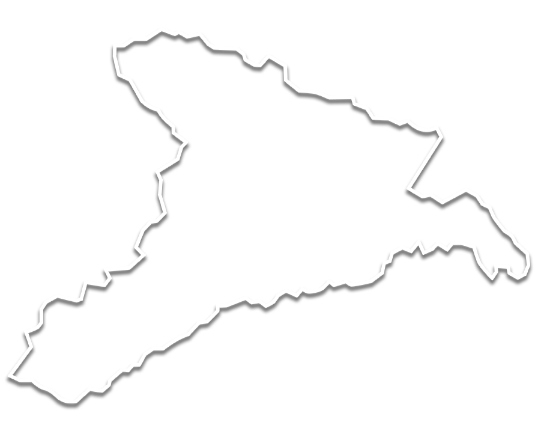
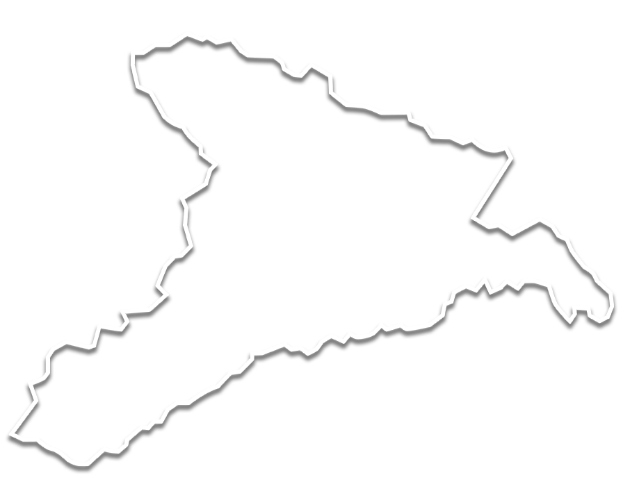
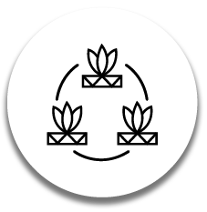
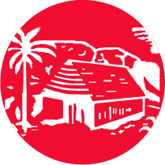
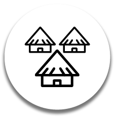
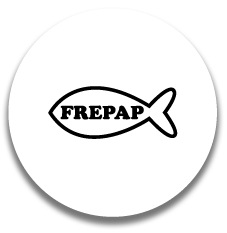

ORPIO
Actor Social:
Organización Regional de los Pueblos Indígenas del Oriente.
Descripción:
Organización que aglomera federaciones indígenas a través de proyectos de desarrollo.

AIDESEP
Actor Social:
Asociación Interétnica de Desarrollo de la Selva Peruana
Descripción:
Organización que aglomera dirigentes de todas las comunidades indígenas de la Selva.
FECOTYBA
Francisco Hernandez
Descripción:
Organización de comunidades indígenas de las etnias ticuna y yaguas.

COMUNIDADES
COMUNIDADES
INDÍGENAS
Descripción:
Las comunidades indígenas que predominan en el territorio son de las etnias Ticuna, Yagua y Bora.
Fuerzas
Armadas
Descripción:
Bases militares hacen presencia en el territorio.
IGLESIAS
EVANGÉLICAS
Descripción:
Institución religiosa preponderante en territorios indígenas, por lo general de prigen brasilero.
DEVIDA
Descripción:
La Comisión Nacional para el Desarrollo y Vida sin Drogas impulsa cultivos alternativos para evitar el crecimiento del narcotráfico.
